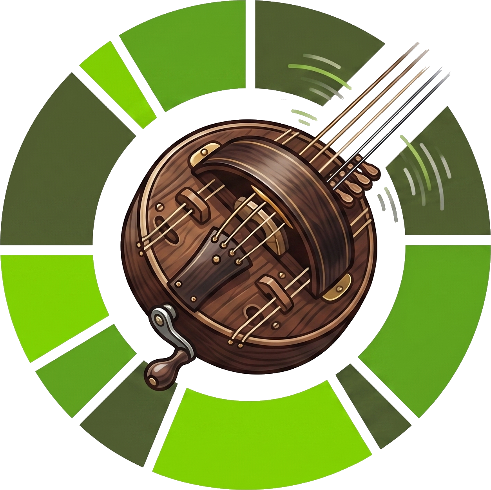

Hurdy-Gurdy
Generate client & server Java/Kotlin code from an OpenAPI spec.

What do you want to build?
Fill the form; copy config for your build tool.
What each output is
All three call the same generator with the same knobs. Maven writes into
target/generated-sources; Gradle into
build/generated-sources/hurdy-gurdy/<name>; the CLI needs an
explicit --output.
Parameters
| Field | Values | Default | Meaning |
|---|---|---|---|
| Root package | string | — | Root package for generated code (controller and dto subpackages). |
| Spec path | path | — | OpenAPI spec file (YAML/JSON). |
| Language | java · kotlin | java | Target language for generated sources. |
| Framework | spring · quarkus | spring | Spring MVC vs Jakarta REST annotations. |
| Generate | controller · api · client | controller | Which interfaces to emit (any subset). |
| Response parameter | bool | false | Expose the raw HTTP response (server + client). |
| Force snake_case | bool | true | Treat DTO properties as snake_case in JSON. |
Which interfaces (generate)
| Spring | Quarkus | |
|---|---|---|
| controller | Server interface to implement (@GetMapping…) | Jakarta REST resource (@GET+@Path…) |
| api | Pure contract (OpenFeign-ready) | Pure contract (MicroProfile REST Client) |
| client | Spring 6 HTTP Interface (@GetExchange…) | @RegisterRestClient interface |
Deeper topics — inheritance/discriminator, x-extends, external
$ref — are covered in the
README.